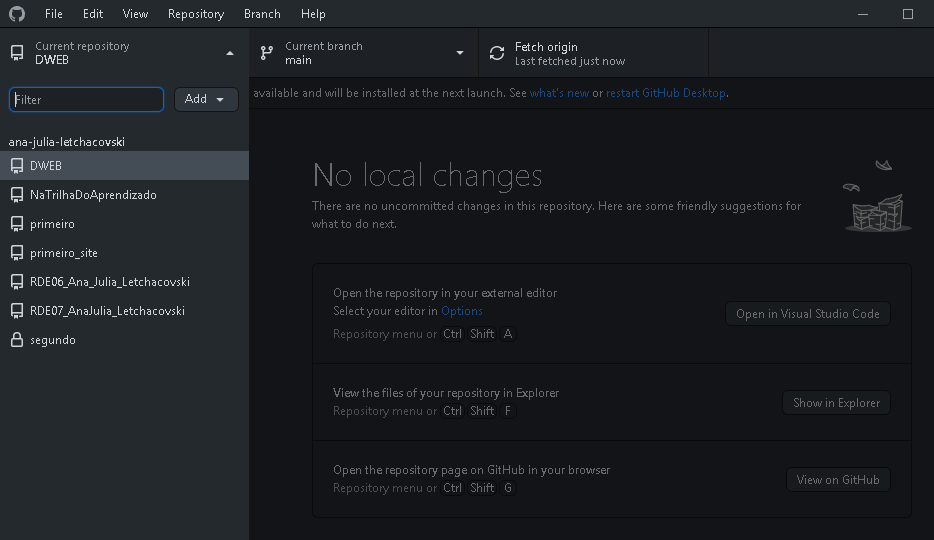

Aula 12 - Branches e Hospedagem
Branches
São ramificações de um projeto de software ou documento e tem como objetivo o desenvolvimento paralelo de:
- novas funcionalidades;
- correção de problemas;
- alteração de código.
- Branche Master ou Main
- braço principal de um projeto em um repositório
- Branch Secundária
- braço secundário de um projeto em um repositório

Hospedagem
O GitHub Pages oferece hospedagem gratuita de sites.Basta criar uma conta e um repositório público e a URL será:
https://nomeusuario.github.io/repositório
Execução:
Locais de uso:
- GitHub Desktop
- GitHub
- VisualStudio
- Fazer login no GitHub
- Sincronizar com GitHub Desktop

- Criar novo repositório público
- Realizar push do repositório mantendo-o público
- Criar/Iniciar o arquivo que servirá de branch main
- Salvar o arquivo e realizar commit seguido de push
- Criar branch secundaria
- Realizar push da branch secundaria
- Abrir arquivo na branch secundaria e realizar as alterações
- Salvar arquivo e realizar commit e push das alterações
- É possível criar mais de uma branch secundária
- Se houver certeza das alterações realizadas na branch secundária, e quiser sincronizar o main com tais alterações, realiza-se o merge
- Realizar push do merge
- Se houver outra branch secundaria é necessário atualiza-la com o novo arquivo main

Execução Hospedagem:
- Logar no GitHub
- Entrar no repositório que se pretende hospedar e acessar configurações/detalhes
- Descer a página até localizar o enunciado "Páginas GitHub" e clicar em "Confira aqui!"
- Localizar o enunciado "Source", selecionar a branch principal e salvar
- Entrar no link que aparecerá na tela e então será direcionado para a página de hospedagem gratuita